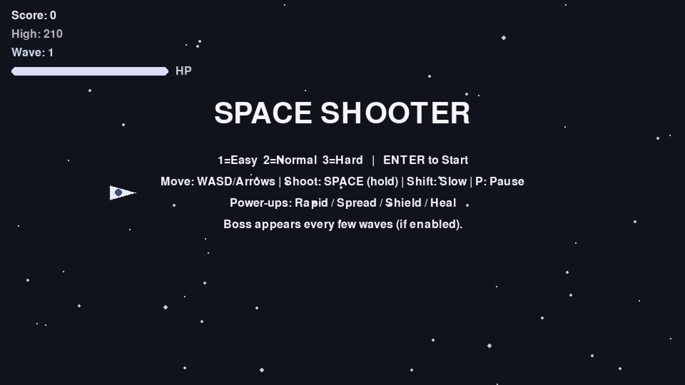
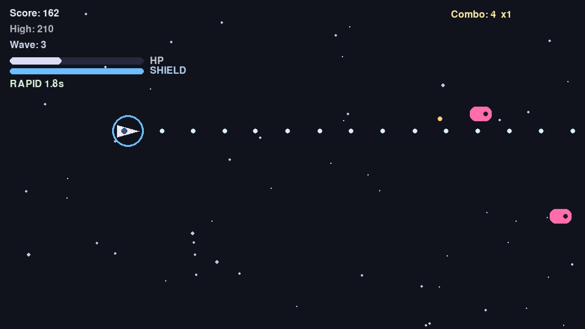
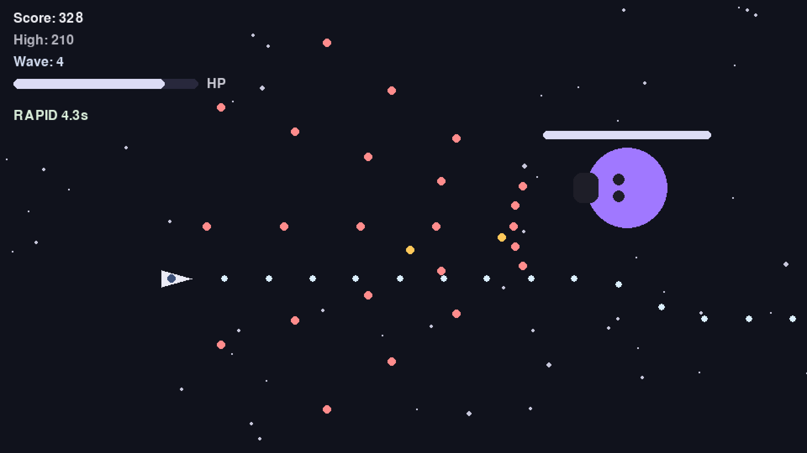
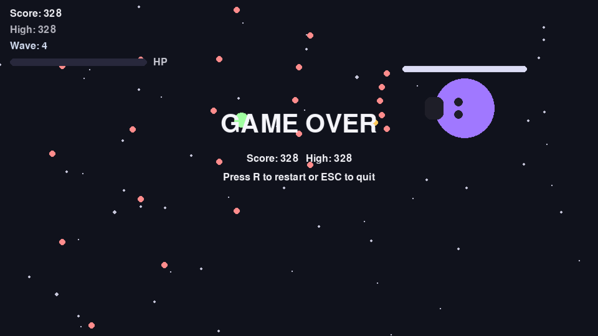

A Python / pygame arcade shooter built for a previous module of the same course.
A small, polished arcade game from earlier coursework — included here at the instructor's request.
This is an earlier project I built in Python using the pygame library. It is a top-down space shooter with wave-based progression, a power-up system, a combo multiplier, and boss fights every few waves. Three difficulty modes scale the enemy speed, fire rate and HP. The game tracks a per-session high score and exits cleanly on game over.

The title screen presents the controls up-front: WASD or arrow keys to move, SPACE held down to fire, Shift for a slower precision speed, and P to pause. The player picks difficulty (1, 2 or 3) and presses ENTER to start.

During a wave the player ship navigates incoming enemies and projectiles. Power-ups drop on enemy kills: Rapid raises fire rate, Spread widens the shot pattern, Shield absorbs hits for a fixed window, and Heal restores HP. Consecutive kills without taking damage build a combo multiplier that boosts the score.

A boss appears every few waves. Bosses have their own HP bar, a wide attack pattern, and a different colour so the player notices the shift in difficulty immediately. The Rapid power-up is the right choice during a boss window — visible here with 4.3 seconds left on its timer.

When HP hits zero, the game shows the final score and the session high, and prompts the player to press R to restart or ESC to quit. The background simulation keeps running so the screen stays visually alive.